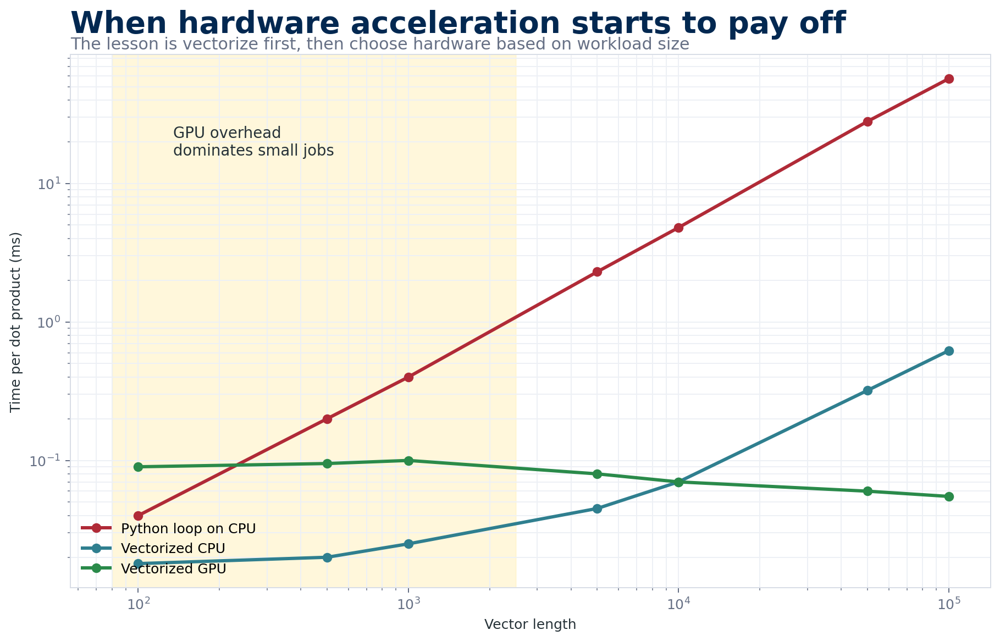

2. CPU vs GPU Computing
This activity demonstrates the practical differences between CPU and GPU operations using Python and PyTorch. You’ll explore how vectorization and hardware acceleration dramatically impact computational performance. If you haven’t yet, start with PyTorch Foundations — this lesson builds directly on those concepts.
Live Workshop Session
📊 View slide deck
Overview
Modern machine learning and structural biology tools rely heavily on GPU acceleration. Understanding when and why GPUs outperform CPUs is essential for:
- Running predictions efficiently: Tools like AlphaFold2, ESMFold, and RFdiffusion all benefit from GPU acceleration
- Writing efficient code: Knowing how to vectorize operations can speed up your analysis scripts by orders of magnitude
- Resource planning: Understanding computational requirements helps you estimate job times and request appropriate resources

The practical lesson is not simply “GPU is faster.” Vectorization usually matters first, and the GPU wins once the workload is large enough to justify transfer and startup overhead.
The Activity
In this hands-on notebook, you’ll compute dot products using three different approaches:
| Method | Description |
|---|---|
| For Loop | Naive Python iteration through each element |
| Vectorized | Using PyTorch’s element-wise operations |
| torch.dot | Built-in optimized function |
You’ll time each method on both CPU and GPU across varying data sizes to see the performance differences firsthand.
Access the Notebook
Google Colab provides free access to GPUs, which is essential for this activity. Click “Runtime” → “Change runtime type” → Select “T4 GPU” to enable GPU acceleration.
If a GPU runtime is unavailable, run the notebook on CPU. It will record GPU values as N/A instead of failing. Use the sample timing table below to explain the expected crossover, then state explicitly that you predicted rather than measured GPU behavior. Maintainers can check notebook structure with python scripts/validate_course_data.py; inside any environment with PyTorch, add --smoke-notebook to run tiny CPU-only operations without requesting a GPU.
Key Concepts
Why For Loops Are Slow
Python for loops execute operations sequentially, one at a time. Each iteration involves:
- Python interpreter overhead
- Individual memory accesses
- No parallelization
For a dot product of vectors with N elements, this means N separate operations executed one after another.
What is Vectorization?
Vectorization means expressing operations on entire arrays rather than individual elements. Instead of:
# Slow: element-by-element
result = 0
for i in range(len(a)):
result += a[i] * b[i]You write:
# Fast: vectorized
result = (a * b).sum()The vectorized version:
- Executes in optimized C/C++ code under the hood
- Can use SIMD (Single Instruction, Multiple Data) instructions
- Processes multiple elements simultaneously
CPU vs GPU Architecture
| Feature | CPU | GPU |
|---|---|---|
| Cores | Few powerful cores (4-64) | Many simple cores (thousands) |
| Best for | Sequential, complex tasks | Parallel, simple tasks |
| Memory | Fast access to RAM | High bandwidth to VRAM |
| Overhead | Low | Data transfer cost |
Moving data between CPU memory and GPU memory takes time. For small operations, this overhead can exceed the computation time, making GPU slower than CPU. The GPU advantage only appears when the computation is large enough to amortize this cost.
Why This Matters for Everything You Ran This Week
Every major tool you touched this week — AlphaFold2, ESMFold, RFdiffusion, Chai-1, Boltz-2, DiffDock — is built around dense tensor operations: matrix multiplies, attention, and convolutions. These are exactly the workloads GPUs were designed for. A transformer attention layer over a 500-residue protein is a few hundred matrix multiplications where each output element only needs a row of one matrix and a column of another — the same operation, thousands of times, with no dependencies between them. A CPU will march through them serially (or with modest SIMD parallelism); a GPU dispatches all of them to thousands of cores simultaneously. That’s why a single AlphaFold2 prediction that takes ten minutes on a GPU would take hours on a CPU, and why the HPC setup work you did on Monday was non-negotiable.
But the GPU is not magic. It wins when the work is both large and parallel, and loses when either condition breaks. Small tensors (think: a single protein’s input embedding, or a batch size of one) leave most of the GPU’s cores idle while you pay the full cost of shuttling data across the PCIe bus to VRAM and back. This is why you’ll sometimes see AlphaFold2’s first prediction feel slow compared to its second — the first pays a warm-up cost (model weights loaded into VRAM, CUDA kernels JIT-compiled) that subsequent predictions amortize. It’s also why many preprocessing steps (MSA generation with HHblits, PDB parsing, small pandas operations) stay on the CPU — they’re either sequential by nature or too small to benefit.
Practical Consequences
A few heuristics that will save you time on the cluster:
- Batch when you can. If you need to predict 50 structures, running them in a loop that re-initializes the model each time is the single worst pattern. Load the model once, then iterate.
- Watch VRAM, not RAM. GPU out-of-memory errors are the #1 failure mode for AlphaFold2 on long sequences. A 1000-residue monomer in AF2 full mode can need 40+ GB of VRAM. Know your GPU’s limit.
- Don’t GPU what you can’t parallelize. If your script spends most of its time in Python for-loops doing bookkeeping, the GPU is idle 95% of the time. Vectorize first, then worry about hardware.
- Profile before optimizing. A two-line
time.time()before/after each section of your code will tell you where the time actually goes — usually somewhere you didn’t expect.
Expected Results
When you run the notebook, you should observe:
- For loops are always slowest - regardless of hardware
- Vectorization provides massive speedup - often 10-100x faster than loops
- GPU beats CPU for large data - but may be slower for small data due to transfer overhead
- torch.dot is fastest overall - it’s optimized specifically for this operation
Sample Timing Comparison
| Method | 100 elements | 5000 elements |
|---|---|---|
| For Loop (CPU) | ~0.5 ms | ~10 ms |
| Vectorized (CPU) | ~0.02 ms | ~0.1 ms |
| torch.dot (GPU) | ~0.1 ms* | ~0.05 ms |
*GPU times include data transfer overhead
Key Takeaways
- Always vectorize when possible - Avoid Python for loops for numerical computations
- GPU overhead matters - Small tasks may run faster on CPU
- Use built-in functions - Libraries like PyTorch have highly optimized implementations
- Profile your code - Measure before assuming what’s slow
Check Your Understanding
Prediction: You time a dot product with 100 elements and find that the GPU is slower than the CPU. Does this show that GPU acceleration is broken? What experiment would distinguish transfer/startup overhead from an implementation error?
Compare your reasoning with an expert response
No. A tiny operation may finish on the CPU before GPU transfer and kernel-launch overhead can be recovered. Repeat the benchmark across increasing vector sizes, warm up the GPU first, synchronize before stopping the timer, and compare both end-to-end timing and compute-only timing. A crossover at larger sizes supports the overhead explanation; consistently poor compute-only performance suggests a benchmarking or device-placement problem.
Questions to Consider
After completing the activity, think about:
- At what data size did GPU start outperforming CPU for vectorized operations?
- If every GPU time shows
N/A, what hardware check should you perform, and how can you still complete the analysis honestly? - How might these principles apply to running AlphaFold2 or other ML tools?
- What would happen if you ran the same experiment with matrix multiplication instead of dot products?